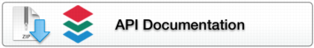

Bio-Formats C++ @VERSION@ Downloads
This is a developer-preview release NOT INTENDED FOR PRODUCTION USE. It is provided for the purpose of allowing developers to prepare their code for the future public release and is used at your own risk. The Model and API are still subject to change at this stage.
Supported builds | Unsupported builds | API | CodePrevious versions
-
Full Bio-Formats documentation is available as web documentation or PDF documentation.
-
Documentation for the native Bio-Formats C++ interface is available to read on the web starting here.
Supported builds
| Downloads | Size | File Name | SHA1 Checksum |
|---|---|---|---|
| @UBUNTU1404_RELEASE_SIZE@ | @UBUNTU1404_RELEASE_BASE@ | @UBUNTU1404_RELEASE_SHA1@ (SHA1) | |
| @UBUNTU1404_DEBUG_SIZE@ | @UBUNTU1404_DEBUG_BASE@ | @UBUNTU1404_DEBUG_SHA1@ (SHA1) |
-
These releases are built against a specific platform release and therefore should always work with the specified platform release.
Unsupported builds
| Downloads | Size | File Name | SHA1 Checksum |
|---|---|---|---|
| @CENTOS65_RELEASE_SIZE@ | @CENTOS65_RELEASE_BASE@ | @CENTOS65_RELEASE_SHA1@ (SHA1) | |
| @CENTOS65_DEBUG_SIZE@ | @CENTOS65_DEBUG_BASE@ | @CENTOS65_DEBUG_SHA1@ (SHA1) | |
| @FREEBSD_RELEASE_SIZE@ | @FREEBSD_RELEASE_BASE@ | @FREEBSD_RELEASE_SHA1@ (SHA1) | |
| @FREEBSD_DEBUG_SIZE@ | @FREEBSD_DEBUG_BASE@ | @FREEBSD_DEBUG_SHA1@ (SHA1) | |
| @OSX1010_RELEASE_SIZE@ | @OSX1010_RELEASE_BASE@ | @OSX1010_RELEASE_SHA1@ (SHA1) | |
| @OSX1010_DEBUG_SIZE@ | @OSX1010_DEBUG_BASE@ | @OSX1010_DEBUG_SHA1@ (SHA1) | |
| @OSX109_RELEASE_SIZE@ | @OSX109_RELEASE_BASE@ | @OSX109_RELEASE_SHA1@ (SHA1) | |
| @OSX109_DEBUG_SIZE@ | @OSX109_DEBUG_BASE@ | @OSX109_DEBUG_SHA1@ (SHA1) |
-
Unsupported builds are available for rolling-release platforms (BSD ports, MacOS X homebrew). The packages and libraries provided by the rolling release and used by Bio-Formats may be updated incompatibly in the future, causing the build no longer work. We cannot guarantee these specific binary builds will be usable in the future or on your particular set-up.
-
We also provide builds for CentOS which rely on third-party libraries not provided by CentOS directly; you will need a compatible build of these libraries for our package to function correctly.
-
In all cases you should be able to build your own binaries to work on operating systems which meet the requirements covered in the documentation. This will ensure your build is compatible with the libraries available on the system.
Bio-Formats C++ API documentation
| API Documentation | Size | File Name | SHA1 Checksum |
|---|---|---|---|
|  | @DOXYGEN_SIZE@ | @DOXYGEN_BASE@ | @DOXYGEN_SHA1@ (SHA1) |
-
The Bio-Formats C++ Doxygen documentation is available to read on the web here.
Source code
| Source Code | Size | File Name | Checksum |
|---|---|---|---|
| @SOURCE_CODE_SIZE@ | @SOURCE_CODE_BASE@ | @SOURCE_CODE_SHA1@ (SHA1) |
Previous versions
-
Previous versions of Bio-Formats C++ can be found on the Bio-Formats C++ archive page.